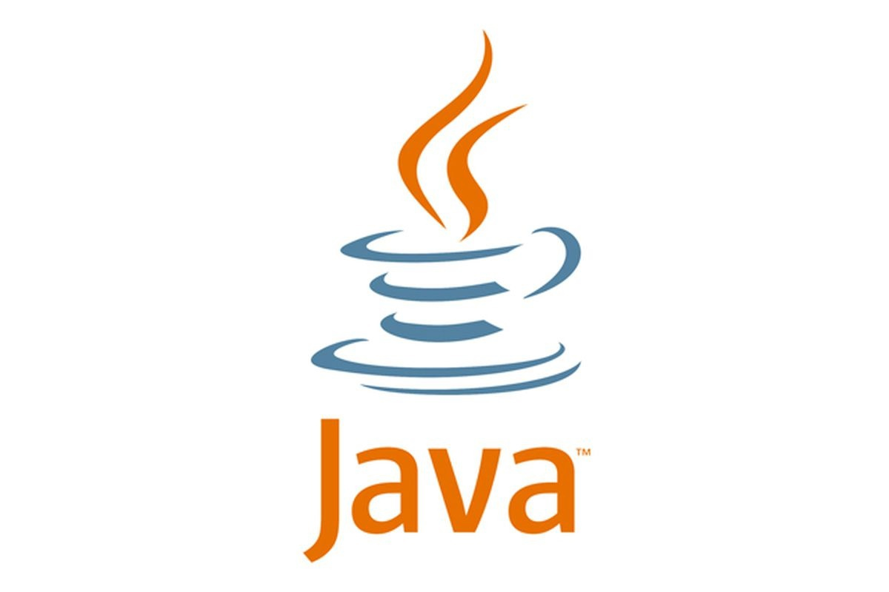

Основные достижения и изобретения
Java
В каком-то смысле, успех Java - это самое худшее, что когда-либо происходило со мной. @Джеймс Гослинг
Главное достижение и изобритение конечно же ялвяется язык програмированияJava! Он принёс Джеймсу всемирную популярность.
Java — строго типизированный объектно-ориентированный язык программирования общего назначения, разработанный компанией Sun Microsystems (в последующем приобретённой компанией Oracle). Разработка ведётся сообществом, организованным через Java Community Process; язык и основные реализующие его технологии распространяются по лицензии GPL. Права на торговую марку принадлежат корпорации Oracle.
Приложения Java обычно транслируются в специальный байт-код, поэтому они могут работать на любой компьютерной архитектуре, для которой существует реализация виртуальной Java-машины. Дата официального выпуска — 23 мая 1995 года. Java занимает высокие места в рейтингах популярности языков программирования (2-е место в рейтингах IEEE Spectrum (2020) и TIOBE (2021).
Программы на Java транслируются в байт-код Java, выполняемый виртуальной машиной Java (JVM) — программой, обрабатывающей байтовый код и передающей инструкции оборудованию как интерпретатор. Достоинством подобного способа выполнения программ является полная независимость байт-кода от операционной системы и оборудования, что позволяет выполнять Java-приложения на любом устройстве, для которого существует соответствующая виртуальная машина. Другой важной особенностью технологии Java является гибкая система безопасности, в рамках которой исполнение программы полностью контролируется виртуальной машиной. Любые операции, которые превышают установленные полномочия программы (например, попытка несанкционированного доступа к данным или соединения с другим компьютером), вызывают немедленное прерывание. Часто к недостаткам концепции виртуальной машины относят снижение производительности. Ряд усовершенствований немного увеличил скорость выполнения программ на Java:
- применение технологии трансляции байт-кода в машинный код непосредственно во время работы программы (JIT-технология) с возможностью сохранения версий класса в машинном коде,
- обширное использование платформенно-ориентированного кода (native-код) в стандартных библиотеках,
- аппаратные средства, обеспечивающие ускоренную обработку байт-кода (например, технология Jazelle, поддерживаемая некоторыми процессорами архитектуры ARM).
По данным сайта shootout.alioth.debian.org, для семи разных задач время выполнения на Java составляет в среднем в полтора-два раза больше, чем для C/C++, но при этом в некоторых случаях Java быстрее, а в отдельных случаях в 7 раз медленнее. С другой стороны, для большинства из них потребление памяти Java-машиной было в 10—30 раз больше, чем программой на C/C++. Также примечательно исследование, проведённое компанией Google, согласно которому отмечается существенно более низкая производительность и бо́льшее потребление памяти в тестовых примерах на Java в сравнении с аналогичными программами на C++. Идеи, заложенные в концепцию и различные реализации среды виртуальной машины Java, вдохновили множество энтузиастов на расширение перечня языков, которые могли бы быть использованы для создания программ, исполняемых на виртуальной машине. Эти идеи нашли также выражение в спецификации общеязыковой инфраструктуры CLI, заложенной в основу платформы .NET компанией Microsoft.
Награды
Также у Джеймса есть награды, такие как: